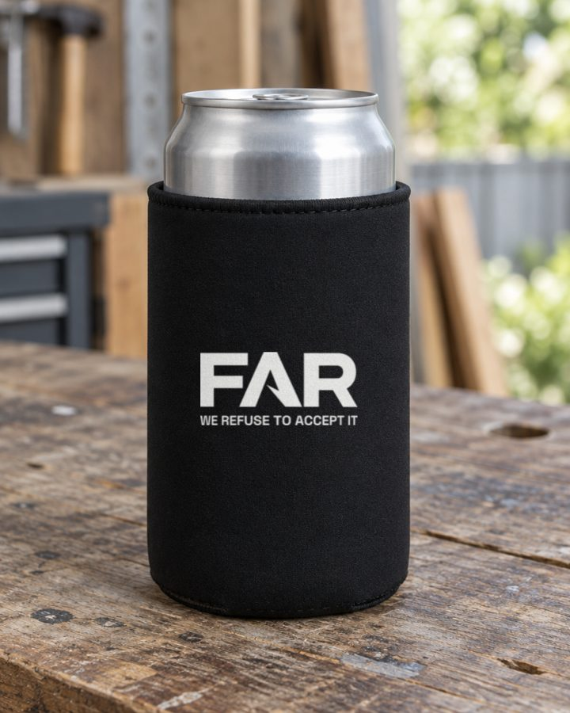

What's done, what isn't, what's coming, and four calls to vote on by Wednesday 14 Oct. Straight off the dashboard. Nobody's assuming anything: if you did something and didn't tick it, say so.
The short version
Boots: Estar finishes the 500 on 28 Nov. By sea they land the first week of January. The first finished pair is in the post now, here around 15-16 Oct.
Socks: paid, in production since 9 Oct. Bags: at Estar before 10 Nov.
Selling: the first 100 pairs go at $219 on a private page from early November. After that it's $249.
The 100: 26 names so far. Fil 15, Grant 10, Lionel 1, Con 0. About 90 of the first 100 have to come from people we know.
Content: Fil posts this week. From Monday 19 Oct it's Grant, Lionel and Con, a week each.
This week
Mon 12
Post: The Insole or Boot Benefits, whichever's ready
Tue 13
Post: Things You Only Hear At Work (Lionel's edit)
Wed 14
Votes close: this week's four calls and the brand check
Thu 15
Post: Con's two truths carousel. Box artwork goes to Don.
15-16 Oct
First finished pair lands. We check it and film the water test.
Fri 16
Post: What You Want To Say. Fil picks a slide factory for a sample. Pencilled in for the lawyer to read the presale terms.
Wed 21
WHS Show, ICC Sydney. All four of us have tickets (Con, yours went to your email). We meet Myriam from the show there.
What everyone did
Since the 4 Oct meeting, off the Tasks tab. Done it but didn't tick it? Open Tasks, tap Done and add one line on what came out of it. Can't do it? Hand it back so it doesn't just sit there.
Fil
Done
Posted Fri 2 Oct, then every day Mon 5 to Fri 9 Oct
Sock order placed with Mary, now in production
Instagram password reset, new login sent to all four
WHS Show: registered, asked Don if Estar's coming
15 names on The 100
New homepage live, the welcome email live, Google Search Console set up
Slides: four new factories asked. Merch: six factories asked for caps, tees, stubbies, keychains and stickers
Filmed The Insole for Monday
Still open
Walk Grant through the 4 Oct meeting (overdue)
Turn on the automatic first message to new followers (overdue)
Open the PO box in Wollongong (overdue, and the box leaflet needs it)
Put his foremen on the Seeding tab
Ask Tony to put Con on the company records (12 Oct)
Box artwork and leaflet to Don (15 Oct)
Insurance quote from Troy, and book the inspector in China (16 Oct)
Draft the founder agreement for the four of us (18 Oct)
Book the lawyer read of the presale terms (pencilled for 16 Oct, not booked yet)
GST form to Tony, the July-September BAS (28 Oct), the books into Xero
Shopify: show prices with GST included
Website privacy page: take the home address off
Instagram: change the link title to "Join the Founding Crew"
A plan for where the boots go when they land
Film the doorbell trip (moved to next week)
Grant
Done
10 names on The 100, and 5 of them already asked
OK'd the couch photo for the box
Picked up the 47/48 slide sample
Voted on Site File, The Burnout and the brand check
Put Athan Dedis on Seeding as a creator
Instagram 10 minutes (ticked 8 Oct)
Not ticked
Ask five blokes what they hate about their work boots (due 9 Oct)
Nominate five foremen or crew leaders for a free pair (none on yet)
Pick 3 of the 5 solo scripts on the Ideas board and film them (due 11 Oct)
Instagram 10 minutes a day
Micromanager refilm with Lionel, on a private location we've cleared (18 Oct)
One paperwork job, on your Tasks (18 Oct)
Two 4 Oct calls only you can answer: can FAR use footage you're in, and can your face go into AI pictures. Answer here
Lionel
Done
Things You Hear: new title, re-exported, in the Week 42 folder for Tuesday
Apprentice Stitch Up into Week 41. It went up 6 Oct and did about 17,000 views, the best of the week.
Ticked the Knock-Off Test as filmed. The footage isn't on Drive yet: where is it?
The 70-worker company on the Seeding tab
Instagram 10 minutes, 5 to 8 Oct
Voted on Site File, the launch box and the 4 Oct calls
Not ticked
Film 2 more solo scripts (due 11 Oct)
The 100: 1 name of 10 (due 11 Oct)
Instagram 10 minutes a day
Edit the solos as they come in (18 Oct)
The brand check vote (closes Wed)
Heads up
Myriam from the WHS Show got a reply from your FAR email today: we'll meet her at the show on the 21st, no stand this year, and we asked her for stand sizes and prices for next year.
Con
Done
Nothing ticked yet.
On record: his two truths carousel posts Thursday.
Not ticked
Vote on the 4 Oct calls, including footage and AI pictures (due 7 Oct). Answer here
Sign up on the FAR site from your phone and tell us what lands (due 9 Oct)
Instagram 10 minutes a day
Write down what tradies tell you in the chair this week (due 11 Oct)
Put the Sydney pumper on the Seeding tab (due 11 Oct)
One carousel idea a week on the Ideas board (the two truths deck may count, tick it if so)
The 100: 0 names of 10 (due 11 Oct)
Turn the bad-review research into carousel or video ideas (18 Oct)
The brand check vote (closes Wed)
Content: from 19 Oct it's yours
The record
25 Aug to 2 Oct: 3 posts in 38 days. Two dark runs, 21 days and then 14.
28 Sep to 9 Oct, two posting weeks: everything that went up, Fil posted. 6 posts, 2 to 9 Oct.
One of them was Lionel's edit, The Stitch Up, the best post of the lot.
No new raw footage from Grant, Lionel or Con on Drive since 16 Sep.
Who owns which week
Week 42
12-18 Oct
Fil (last one)
Week 43
19-25 Oct
Lionel
Week 44
26 Oct-1 Nov
Grant
Week 45
2-8 Nov
Con
Then round again. Swap weeks between yourselves if you need to, as long as you're both across it.
The week's owner: by 6pm the Sunday before your week, every posting day has its finished video, cover, caption and pinned comment in Posting content > Week number > day, scheduled for 7pm. You chase the footage and you pick the pieces.
Everyone, every week: footage onto Drive, ideas onto the Ideas board, replies cleared, 10 minutes a day commenting, and every post reshared to your own story (Con 48 hours after).
An empty day stays empty. Nobody fills it at quarter to seven.
The grid: Monday and Thursday are trust posts, Tuesday and Friday are comedy, all at 7pm. Wednesday and Sunday are extras when there's something good. If nothing goes up for 7 days, the dashboard flags it every day until something does.
How a post gets made
The way the last two weeks were done: the editor cuts the video, then the whole pack lands together (video, cover, caption and pinned comment), ready to drop in the folder. Lionel's cut of What You Want To Say went through the editor and came out better. Anyone can do this now.
1. Raw footage, or your own rough cut, onto Drive.
2. Dashboard: Studio > Video > Edit it. Pick the clips and say what you want.
3. A cut comes back. Add notes if it needs changes (up to three rounds).
4. Tap Use this one. You get the final video, the cover, the caption and pinned comment (already run through the copy checker) and a CapCut pack if you want to tweak it yourself.
5. Drop the lot in that day's folder and schedule it for 7pm.
Watch this Each of us can start 2 edits a day. If you leave the whole week to Sunday like Fil used to, you'll hit the wall. Start the edits through the week.
Before anything goes up
Captions go in the folder with the rest of the pack: video, cover, caption, pinned comment. They come from the editor's pack, Script it on the idea's card, or a session, and all three run the copy checker. Don't write one cold.
Don't say on camera or in captions: nitrile, waterproof, wide fit, full leather. None of it is true for this boot.
Do say: rubber sole, slip-rated, aramid puncture plate, steel toe, certified to AS 2210.3:2019.
Collab invite goes to whoever's in the video.
Employer names or logos on shirts or sites get blurred.
Anything made with AI gets Instagram's AI label when you upload it.
Never "thanks for the follow".
Ready-made for Week 43: the first finished pair coming out of the box, and the water test.
Box extras and merch: the prices
A stubby holder and a keychain in every box?
Fil's idea, and it sits under Lionel's spend brake, so it's a vote.

Stubby holder, logo printed whiteKeychain A: FAR cut out, blackKeychain B: leather tab, FAR pressed in
Mockups: our real logo file on a stand-in product. The factories' own proofs replace these. Keychain A is Fil's pick. It's priced below as the leather one because the cut-out price isn't in yet, and cut-out shapes usually carry a one-off mould fee.
Stubby holder
black neoprene, logo printed
~$0.47 each
Keychain
black PU leather, logo pressed in
~$1.11 each
Both
per box
~$1.58
Website prices in AUD before freight. Real quotes with freight are on the way.
500 boxes is about $790. 600-700 of each, with spares to hand out, is about $950-1,100.
What goes in the box now costs about $17.65 a box (boot not counted). This takes it to about $19.25.
Against Two more things to pack into 500 boxes. A keychain is the thing most people bin, though nobody has a real number either way. And it's still about $800-1,100 plus freight while every dollar's watched. An Australian-made stubby is $2.90 each (thicker, 5 mm).
Caps and tees, first run of 100 each
Molly at Xiame made our shirts and has quoted both. Freight isn't included yet.
Caps
Lionel's black 6-panel, logo embroidered white
US$3.40 each, US$340 for 100
Tees
black 180 gsm, screen printed
US$4.30 each, US$430 for 100
In Aussie dollars that's about $490 for the caps and $620 for the tees, so about $1,120 before freight.
Our last parcel from her flew at about $19 a kilo. Our rough guess for freight is $500-700, so roughly $1,600-1,800 landed for the lot.
Stickers are already a yes from 4 Oct: about 1,000 outdoor vinyl from an Australian printer, around $400.
The cap logo: Molly says the small WE REFUSE TO ACCEPT IT line may blur in stitching. She's drawing two proofs, the full logo bigger, or FAR on the front and the line on the back. We pick from the real proofs.
Slides: where they stand (no vote yet)
HEVA can't finish before the end of January, so under our 4 Oct rule they're out of the first boxes.
Four other factories asked 11 Oct. Great Shoes is the best lead: its own slide, single sizes up to EU 50, FAR raised on the strap. Taihui needs a new mould for our logo. Walk To only does paired sizes. Mingyi hasn't answered. No prices yet.
Fil picks one for a logo sample by Fri 16 Oct. To get slides here before Christmas they have to fly, which means a deposit by Mon 2 Nov. Miss that and slides stay out of the first boxes.
HEVA's five branded sample pairs ship this week. They're the quality bar.
Four calls, vote by Wednesday 14 Oct
1. Stubby holder and keychain in every box?
Both, stubby only, keychain only, or neither. And if it's a keychain, the FAR cut-out or the leather tab. Numbers and pictures above.
2. Caps and tees, 100 each from Molly?
Both, caps only, tees only, or not until the boots land. Numbers above.
3. Fly the first 150 pairs, or all 500 by sea?
On 4 Oct three of us voted to fly the first 150, two of those only if sizes are locked by mid-November. Fil opened it back up for all four. Grant and Con haven't voted.
Fly 150, rest by sea: about $3,362 more, roughly $22 a pair on the 150. They'd land early to mid December. That's our estimate, the freight company hasn't confirmed an air date. Flying anything means paying Don the full balance when production ends. The freight quotes have run out and need redoing.
All 500 by sea: they land the first week of January.
Our website already tells people "December 2026 to early January 2027". The first 100 pay in early November, and most of them are people we know. All sea means they wait until mid to late January, and the website date has to change.
Recommendation Fly the first 150, in the sizes the presale orders ask for. It keeps the date we've already told people, and the people we ask personally get their boots before Christmas. Against: $3,362, and Don gets the full balance sooner.
4. Weekly catch-up: which night?
20 minutes, on the phone. It was meant to stop the dark weeks and it still hasn't got a night: the 4 Oct vote tied 1-1.
Recommendation Sunday night. The week's owner has next week in by 6pm Sunday, so the catch-up checks it's there and looks back at the week.